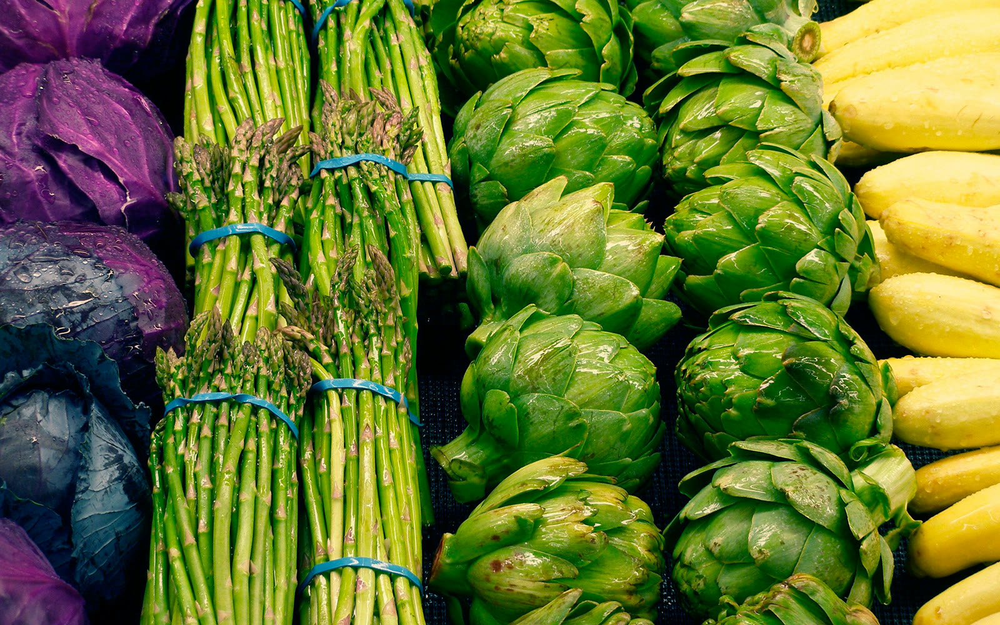
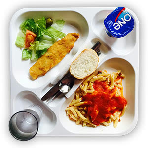
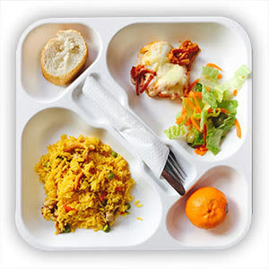
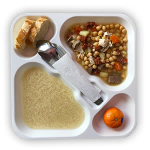
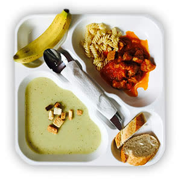
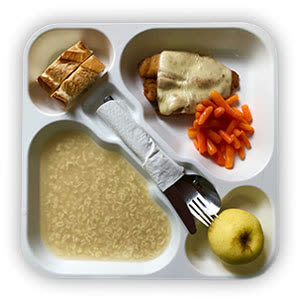
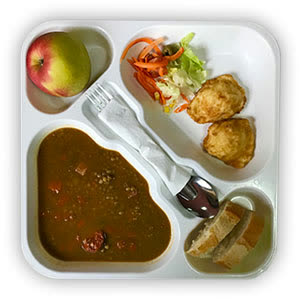
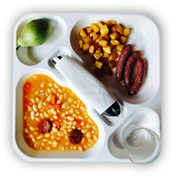
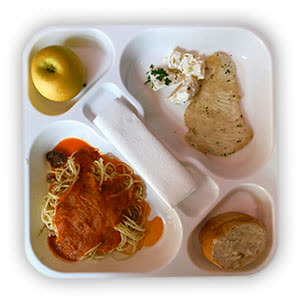

Comedores escolares · residencias · empresas
Cocina propia y nutrición seria, con 35 años de oficio
Terkor gestiona comedores para centros escolares, residencias y empresas de Madrid: cocina propia, menús supervisados por nutricionistas y más de 35 años de experiencia en el sector.
La empresa
Un compromiso con cada centro que confía en nosotros
Conoce Terkor-
01
Eficacia
Para nosotros el factor humano es muy importante, por ello mantenemos un diálogo continuo con nuestros clientes y empleados, para responder rápida y eficazmente a todas sus necesidades. Visitamos diariamente las empresas y residencias, para detectar y recibir de forma directa todas las observaciones que puedan mejorar nuestros servicios.
-
02
Calidad
Seleccionamos cuidadosamente a todo nuestro equipo profesional, buscando el perfil que mejor se adapte a sus características y con un compromiso de evaluación y formación continuas. Y si lo desea, contamos con su personal de confianza y que actualmente trabaja con usted, asumiendo todas las gestiones laborales. Porque en Terkor sabemos que cada persona cuenta.
-
03
Seguridad
Seleccionamos meticulosamente a nuestros proveedores y comprobamos personalmente el estado de la calidad de los alimentos. Controlamos que todos los procesos cumplan las normas higiénico-sanitarias, de acuerdo con la legislación vigente. Por eso todo nuestro personal cuenta con el carné de manipulador y conoce las normas de conservación, almacenamiento, envasado y distribución.
Servicios
Más allá del menú del día
Cubrimos todo lo que un centro necesita alrededor del comedor: personal, prevención, eventos y el mantenimiento de la propia cocina.
Ver todos los servicios-
Traslado de personal
Traslado de personal, ya sea por propuesta del centro o por necesidades de la empresa.
-
Prevención de riesgos laborales
Nuestra compañía se encarga de todo lo relativo a la prevención de riesgos laborales.
-
Eventos especiales
Servicio adicional de eventos especiales en el propio centro.
-
Limpieza y maquinaria de cocina
Realizamos servicios de limpieza de todas las instalaciones y habitaciones, y ofrecemos presupuestos e instalación de maquinaria industrial para cocinas.
Nutrición e innovación
Dieta mediterránea, supervisada mes a mes
Platos
Lo que comen cada día en nuestros centros
-

-

-

-

-

-

-

-

Blog
Nutrición, temporada y vida escolar
-

GUERRA A LAS FRITURAS
En TERKOR, como especialistas en catering para colectividades, apostamos por un modo de vida saludable basado en determinados conceptos. Uno…
-

POR QUÉ COMER (MÁS) PESCADO EN EXÁMENES
Sí. Las verduras y el pescado no son precisamente santo de devoción de niños y menos aún en los adolescentes. Las primeras por sus olores y …
-

LA ALIMENTACIÓN EN PRIMAVERA
La llegada de la primavera trae numerosos cambios en la vida de los más pequeños. El buen tiempo se asocia con una mayor cantidad de activid…


¿Gestionas un centro escolar, una residencia o una empresa?
Cuéntanos tus necesidades de comedor y te preparamos una propuesta.